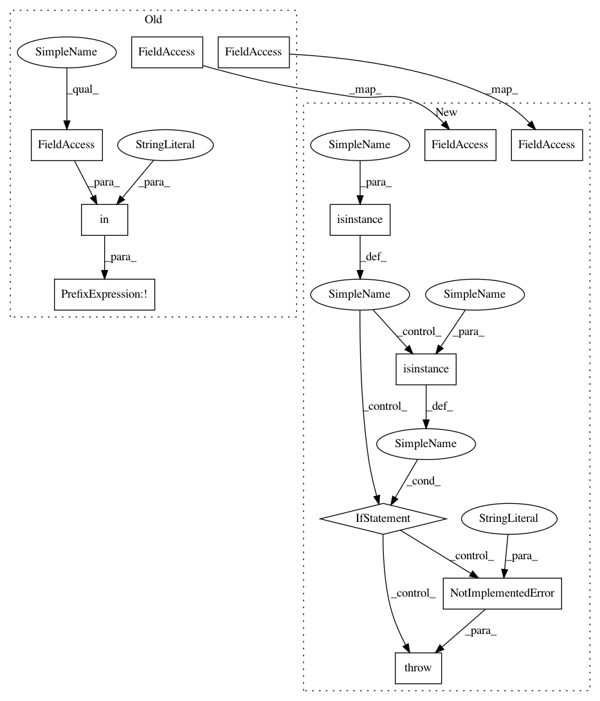

05ff22f2cdff1f560975d60c7371cedcf4dca201,bindsnet/learning/__init__.py,,m_stdp_et,#Any#,193
Before Change
| :code:`a_plus` (:code:`int`): Learning rate (positive).
| :code:`a_minus` (:code:`int`): Learning rate (negative).
if not "kernel_size" in conn.__dict__:
// Parse keyword arguments.
try:
reward = kwargs["reward"]
except KeyError:
raise KeyError("function m_stdp_et requires a reward kwarg")
a_plus = kwargs.get("a_plus", 1)
a_minus = kwargs.get("a_plus", -1)
// Get P^+ and P^- values (function of firing traces).
conn.p_plus = -(conn.tc_plus * conn.p_plus) + a_plus * conn.source.x.unsqueeze(-1)
conn.p_minus = -(conn.tc_minus * conn.p_minus) + a_minus * conn.target.x.unsqueeze(0)
// Get pre- and post-synaptic spiking neurons.
pre_fire = conn.source.s.float().unsqueeze(-1)
post_fire = conn.target.s.float().unsqueeze(0)
// Calculate value of eligibility trace.
conn.e_trace += -(conn.tc_e_trace * conn.e_trace) + \
conn.p_plus * post_fire + pre_fire * conn.p_minus
// Compute weight update.
conn.w += conn.nu * reward * conn.e_trace
// Bound weights.
conn.w = torch.clamp(conn.w, conn.wmin, conn.wmax)
else:
out_channels, _, kernel_height, kernel_width = conn.w.size()
padding, stride = conn.padding, conn.stride
After Change
a_plus = kwargs.get("a_plus", 1)
a_minus = kwargs.get("a_plus", -1)
if isinstance(conn, Connection):
// Get P^+ and P^- values (function of firing traces).
conn.p_plus = -(conn.tc_plus * conn.p_plus) + a_plus * conn.source.x.unsqueeze(-1)
conn.p_minus = -(conn.tc_minus * conn.p_minus) + a_minus * conn.target.x.unsqueeze(0)
// Get pre- and post-synaptic spiking neurons.
pre_fire = conn.source.s.float().unsqueeze(-1)
post_fire = conn.target.s.float().unsqueeze(0)
// Calculate value of eligibility trace.
conn.e_trace += -(conn.tc_e_trace * conn.e_trace) + conn.p_plus * post_fire + pre_fire * conn.p_minus
conn.w += conn.nu * reward * conn.e_trace // Compute weight update.
conn.w = torch.clamp(conn.w, conn.wmin, conn.wmax) // Bound weights.
elif isinstance(conn, Conv2dConnection):
out_channels, _, kernel_height, kernel_width = conn.w.size()
padding, stride = conn.padding, conn.stride
p_plus = a_plus * im2col_indices(conn.source.x, kernel_height, kernel_width, padding=padding, stride=stride)
p_minus = a_minus * conn.target.x.permute(1, 2, 3, 0).reshape(out_channels, -1)
pre_fire = im2col_indices(conn.source.s, kernel_height, kernel_width, padding=padding, stride=stride).float()
post_fire = conn.target.s.permute(1, 2, 3, 0).reshape(out_channels, -1).float()
// Post-synaptic.
post = (p_plus @ post_fire.t()).view(conn.w.size())
if post.max() > 0:
post = post / post.max()
// Pre-synaptic.
pre = (pre_fire @ p_minus.t()).view(conn.w.size())
if pre.max() > 0:
pre = pre / pre.max()
// Calculate point eligibility value.
conn.e_trace += -(conn.tc_e_trace * conn.e_trace) + (post + pre)
conn.w += conn.nu * reward * conn.e_trace // Compute weight update.
conn.w = torch.clamp(conn.w, conn.wmin, conn.wmax) // Bound weights.
else:
raise NotImplementedError("This learning rule is not supported for this Connection type.")
In pattern: SUPERPATTERN
Frequency: 3
Non-data size: 12
Instances
Project Name: BindsNET/bindsnet
Commit Name: 05ff22f2cdff1f560975d60c7371cedcf4dca201
Time: 2018-07-19
Author: djsaunde@umass.edu
File Name: bindsnet/learning/__init__.py
Class Name:
Method Name: m_stdp_et
Project Name: BindsNET/bindsnet
Commit Name: 05ff22f2cdff1f560975d60c7371cedcf4dca201
Time: 2018-07-19
Author: djsaunde@umass.edu
File Name: bindsnet/learning/__init__.py
Class Name:
Method Name: m_stdp_et
Project Name: BindsNET/bindsnet
Commit Name: 05ff22f2cdff1f560975d60c7371cedcf4dca201
Time: 2018-07-19
Author: djsaunde@umass.edu
File Name: bindsnet/learning/__init__.py
Class Name:
Method Name: hebbian
Project Name: BindsNET/bindsnet
Commit Name: 05ff22f2cdff1f560975d60c7371cedcf4dca201
Time: 2018-07-19
Author: djsaunde@umass.edu
File Name: bindsnet/learning/__init__.py
Class Name:
Method Name: post_pre